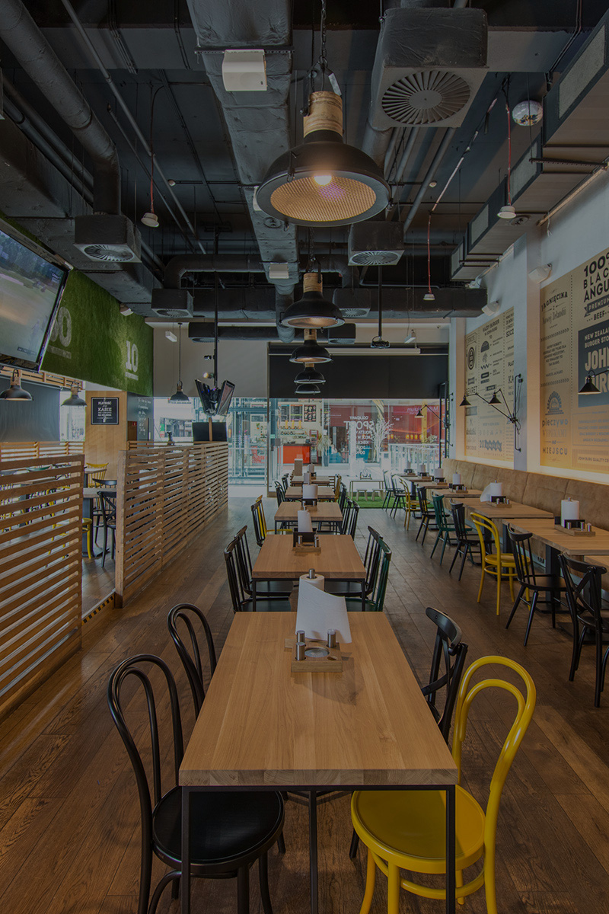

Zapraszamy do Rare & Juicy
O nas
W Rare & Juicy wierzymy, że burger to coś więcej niż szybki posiłek – to sztuka smaku, kunszt wykonania i hołd dla najlepszych składników. Nasza misja? Serwować burgery, które są tak soczyste, że zostają w pamięci na długo.Każdy element – od maślanej brioche wypiekanej codziennie, przez sezonowaną wołowinę najwyższej jakości, po autorskie sosy – tworzymy z pasją i dbałością o najmniejszy szczegół. Nie idziemy na kompromisy. Wybieramy lokalnych dostawców, świeże składniki i smak, który mówi sam za siebie.
Rare & Juicy to przestrzeń, w której spotykają się elegancja, street food i nowoczesny klimat. Tworzymy miejsce dla ludzi, którzy cenią jakość – i nie boją się jeść z klasą.
